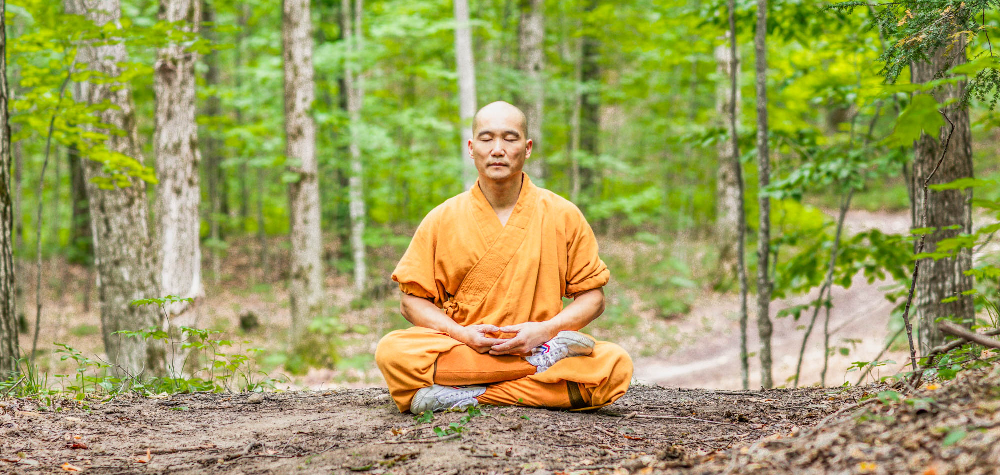

Activities at Training
Kung Fu has a variety of activities to ensure that each students develops each part of their physical and mental capabilities.
Kung Fu combines all forms of discipline to create a holistic training experience.
Plan of Activities
The activities are designed to ensure that each student develops their physical and mental capabilities.
Here are some of the activities that take place during Kung Fu training:

- Warm-up exercises to prepare the body for training
- Forms practice to perfect techniques and movements
- Sparring sessions to apply skills in a controlled environment
- Meditation and breathing exercises for mental clarity
- Strength and conditioning workouts to build endurance
- Philosophical discussions on martial arts principles
Adjustments can be made based on performance abilities
Check out other course projects: